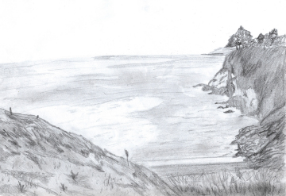

EJERCICIO MADERA 1
En este trabajo se nos pidió hacer un paralelepípedo de 40x 40x 20 en el cual debíamos introducir en el 5 metros de junquillos creando un recorrido, este tenía que tener algún tipo de los conocimientos adquiridos el año anterior jerarquización, ritmo, etc
EJERCICIO POLIESTIRENO EXPANDIDO
En este encargo se nos pidió crear una composición que tuviera relación con el modelo en madera el cual debía tener espacios que se conectaran entre sí, esto se debía lograr con 10 planchas de 40 por 40 apiladas una arriba de la otra.
EJERCICIO MADERA 2
En este tercer encargo se pidió hacer el modelo de plumavit en MDF de 3 mm el cual debía realizarse cada capa de pluavit en dos de madera, utilizamos tuercas e hilo 3/16 debimos separarlo y potenciar el lugar más llamativo de nuestro trabajo, debimos solucionar el problema de la unión solo en una esquina.
EJERCICIO CUATRO ATMOSFERA
Acá debimos buscar la mejor parte de nuestro trabajo en plumavit y potenciarlo con diferentes fotografías, luego de esto elegir la mejor y hacer un fotomontaje con la escala humana.
UNIDAD “EL LUGAR”
En la unidad dos llamada el lugar, realizaremos una visita a la playa de rocoto la cual nos serviría para entender el entorno, la pendiente se trabajar en equipos el cual en mi caso estaría integrado por Fernando Vásquez, Gonzalo Rojas, Alejandro Cid y yo Fernando Gaete, se estudia el lugar a través de diferentes mapeos, que finalmente nos serviría para relanzar las diez cartografías grupales con diferentes temas, también se realizó un trabajo con este mismo equipo que a mi grupo le tocó levantamiento, el cual debió realizar cortes y levantamiento de la vegetación encontrada en el lugar, además de algunos croquis del lugar y una clase dedicada al entendimiento de bajar una pendiente con escaleras y rampas, la cual se nos enseñó el cálculo para sacar cada una de estas. Para finalizar elegimos individualmente una cartografía para trabajar con ella de algo macro se pasó a micro mi tema fue la vegetación, con esta realice el plano de emplazamiento dos cortes y una maqueta del lugar en escala 1:200.
cartografías
23
Realizamos 10 cartografías grupales con el análisis de la playa de Rocoto, con diferentes escalas del mapa 1:500 1:2500 1:10000 enfocándose en el sector de la playa.
LEVANTAMIENTO
De estas cartografías pasamos a diferentes análisis como equipos de trabajo uno fue la maqueta del lugar, video, historia del lugar, levantamiento, y registro fotográfico, el de mi grupo fue levantamiento, realizar emplazamiento del lugar y cortes de este en una escala macro. Este análisis debía lograr hacer el levantamiento y registro de las especies de árboles, los distintos suelos cortes sectorizados.

CROQUIS
RAMPAS Y ESCALERAS
CARTOGRÁFIAS INDIVIDUALES
Luego de esto debimos realizar cartografías individuales con base de las creadas en los grupos con ello escojamos un tema para trabajar, en mi caso fue vegetación con el análisis realizado por mi grupo de levantamiento me sirvió para escoger el lugar donde emplazaría mi recorrido.
Después nos percatamos que el levantamiento de la arborización estaba incorrecto se realizó un nuevo registro de este, así también debió cambiar mi emplazamiento porque al comienzo trabajaba con el espacio que quedaba entre los árboles, luego como cambio todo esto tuve que escoger dos especies de árboles para trabajar con ellos y por los espacios que quedaban entre estos . Las dos especies fueron el ciprés y la puya.
EMPLAZAMIENTO
Acá se muestra el emplazamiento de mi proyecto el cual esta mostrado con los diferentes planos de la maqueta que debíamos construir, también adjunto mi primer emplazamiento del cual comenzó todo lo que fue finalmente mi recorrido.
MAQUETA
Para finalizar esta unidad debimos realizar una maqueta individual del terreno la cual se cambió de seis cotas en una a tres cotas en una dándole una separación a cada una de ellas que cupiera en el espacio que teníamos antes vacío. Se intentó hacer de a una pero el nivel de complejidad era mucho aparte para el pagado de cada cota queda un espacio muy pequeño al final se dejó de tres cotas.
UNIDAD lll
En esta tercera unidad trabajamos en diferentes actividades como el mejorar la planta de emplazamiento entregada en el solemne anterior, también definir la estrategia que utilizaríamos tenía que tener directa relación con la atmosfera, la cual la obtuvimos en la primera unidad, además de trabajar en la zonificación en los espacios que debía tener nuestro proyecto, la jerarquización de los espacios, la disposición de los diferentes espacios que este debía tener como la kitchenette, zona de servicios, espacio madre, el cual debía ser el más interesante, igualmente trabajamos en dibujo técnico tanto en las plantas como en los cortes de nuestro proyecto, ya cuando estaba definido el proyecto debimos solucionar el problema de los espacios que tenían vacíos y estaban enterrados en el cerro, cambiar accesos, etc. Para finalizar realizamos una maqueta 1:100 del lugar donde estaba emplazado nuestro proyecto en un tamaño doble carta.
PLANTAS
CORTES
Acá están los cortes de mi proyecto el cual tuvo un proceso bastante largo después de realizar muchos cortes todos ellos con diferentes errores hasta llegar a este resultado final el cual se encuentra completo y sirve para entender los diferentes espacios que podemos encontrar en él.
MAQUETA EMPLZAMIENTO
Finaliza la el semestre con la realización de una maqueta de emplazamiento el cual contenia mi proyecto en una escala más pequeña y una sección del terreno con el proyecto en una escala mayor. para poder ver el programa de este.
{kind=link}
{kind=link}
{kind=link}
{kind=link}
{kind=link}
{kind=link}
{kind=link}
{kind=link}
{kind=link}
{kind=link}
{kind=link}
{kind=link}
{kind=link}
{kind=link}
{kind=link}
{kind=link}